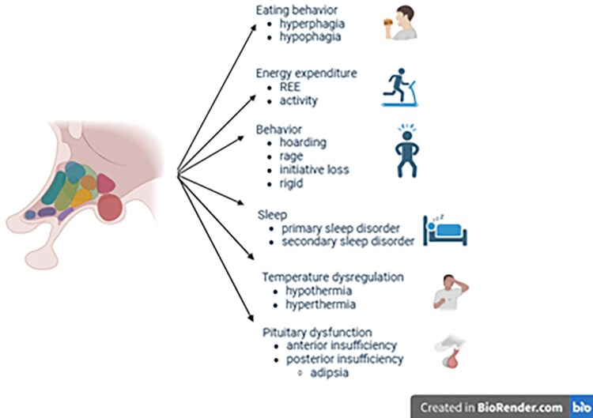
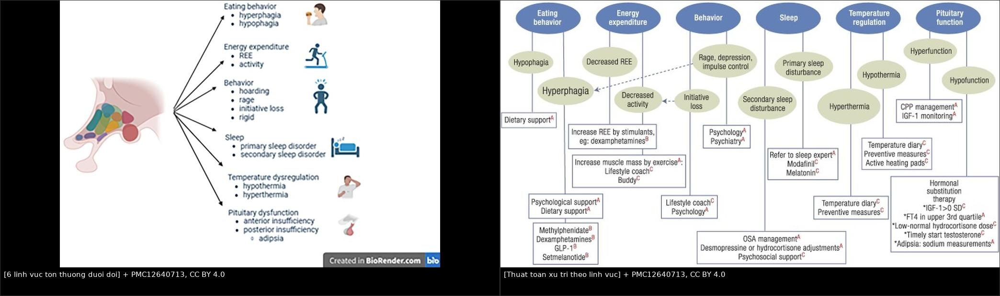
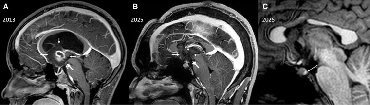
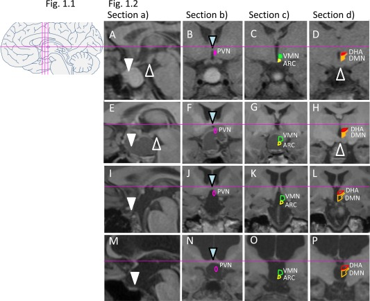
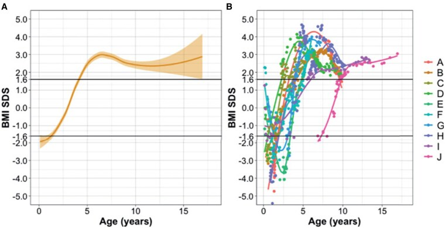

1754 — Hội chứng dưới đồi ở trẻ sau tổn thương trục dưới đồi–tuyến yên / Acquired hypothalamic syndrome in children
Tags: pattern:ton-thuong-duoi-doi pattern:beo-phi-sau-mo pattern:mat-khat pattern:roi-loan-dieu-nhiet vung:nao vung:tuyen-yen protocol:MRI-nao protocol:sang-loc-noi-tiet score:chi-so-ton-thuong-duoi-doi incidentaloma:khong
Mức chắc chắn (certainty): tổng hợp y văn (literature synthesis) — 3 bài tổng quan/thuật toán 2025–2026 có ảnh (Endocr Rev 2025, PMC12640713; JCEM 2026, PMC13466942; J Clin Res Pediatr Endocrinol 2026, PMC13325933), 2 tài liệu đồng thuận (Endocr J 2026 về tiêu chuẩn béo phì dưới đồi, PMC12895118; Eur J Endocrinol 2023 về tiêu chuẩn hội chứng dưới đồi — dẫn qua PMC12673360), 1 đoàn hệ điểm tổn thương dưới đồi trên MRI (Obesity 2015, PMC5029599) và 2 báo cáo ca có ảnh (JCEM Case Rep 2026, PMC13213079; J Clin Med 2015, PMC4600159). Không có ca nguyên văn do nhóm tự viết; mọi ca trong quiz là ca có ảnh từ bài gốc, ghi rõ PMCID.
Câu chốt: béo phì sau mổ u vùng trên yên không phải "do corticoid" hay "do ăn nhiều" — đó là tổn thương nhân dưới đồi, và chỉ số quyết định là tốc độ tăng BMI: +1,0 SDS trong 12 tháng đầu, tồn tại ≥ 24 tháng, đạt BMI SDS ≥ +2,0 = béo phì dưới đồi mắc phải (aHO). Nhưng béo phì chỉ là 1 trong 6 lĩnh vực: bỏ sót mất khát (tăng Na máu, có thể tử vong), hạ nhiệt độ, rối loạn giấc ngủ hay hành vi là sai lầm ngang với bỏ sót khối u. Câu hỏi đúng trên mọi MRI sau mổ không phải "còn u không" mà là "còn bao nhiêu vùng dưới đồi lành" — vì vị trí tổn thương (thể vú, sàn não thất III, vùng sau) dự báo béo phì mạnh hơn kích thước u.
1. Tổng quan bệnh học – cơ chế hình ảnh
1.1 Bệnh học và dịch tễ
- Hội chứng dưới đồi (hypothalamic syndrome, HS) là tập hợp hậu quả của tổn thương vùng dưới đồi — do u, phẫu thuật, xạ trị, chấn thương sọ, hoặc bệnh viêm/thâm nhiễm. Biểu hiện không chỉ thiếu hormone tuyến yên mà còn béo phì dưới đồi, rối loạn giấc ngủ–nhịp sinh học, rối loạn điều nhiệt, rối loạn hành vi–nhận thức (PMC13466942).
- Nguyên nhân hàng đầu ở trẻ là u sọ hầu (craniopharyngioma) — tỉ lệ mắc 0,5–2,0 ca/triệu người/năm; các nguyên nhân khác: u mầm, u thần kinh đệm, nang khe Rathke, LCH, chấn thương sọ, ROHHAD, Prader–Willi (PMC13325933).
- Tần suất rối loạn chức năng dưới đồi rất khác nhau: 20–100% tùy nguyên nhân, tuổi, thời gian theo dõi và mức độ phẫu thuật (PMC12640713). Ở u sọ hầu trẻ, khoảng một nửa bệnh nhân có tổn thương dưới đồi phát triển béo phì dưới đồi (PMC13325933).
- Tiêu chuẩn chẩn đoán HS ở trẻ (2023) chia thành các lĩnh vực: tăng ăn (hyperphagia), giảm ăn (hypophagia), BMI, vấn đề hành vi, rối loạn giấc ngủ, rối loạn điều nhiệt, suy tuyến yên, đánh giá hình ảnh dưới đồi và hội chứng di truyền dưới đồi. Áp dụng cho 120 bệnh nhân: 52,5% đạt tiêu chuẩn HS; trong đó 76,7% suy tuyến yên, 32,5% tăng ăn, 40% rối loạn giấc ngủ, 14,2% rối loạn điều nhiệt (van Santen 2023, Eur J Endocrinol 188:214 — dẫn qua PMC12673360).
- Béo phì dưới đồi mắc phải (acquired hypothalamic obesity, aHO) — tiêu chuẩn đồng thuận quốc tế 2026: tổn thương dưới đồi thấy trên MRI + BMI tăng nhanh trong 12 tháng đầu (người lớn ≥ 5%; trẻ ≥ +1,0 SDS) + tồn tại ≥ 24 tháng + béo phì (trẻ BMI SDS ≥ +2,0) (PMC12895118).
- Hậu quả dài hạn: ở u sọ hầu trẻ, béo phì nặng (BMI > 3 SDS) gặp 45,4% lúc theo dõi cuối; tăng cân quá mức/tăng ăn tăng từ 39% ở 10 năm lên 67% ở 20 năm; tử vong chuẩn hóa (SMR) 2,88–9,28, tử vong tim mạch cao gấp 3–19 lần dân số chung (PMC13325933).
1.2 TẠI SAO hình ảnh và lâm sàng lại như vậy
- Béo phì dưới đồi không phải "tội" của ý chí: tổn thương nhân cung (arcuate nucleus) phá hệ POMC–MC4R (tín hiệu no) và nhân bụng–giữa (ventromedial) mất tín hiệu no → tăng ăn; đồng thời mất điều hòa giao cảm → giảm chuyển hóa nghỉ (REE) và giảm vận động. Trong 67 trẻ có hội chứng dưới đồi, 67,2% có REE đo được < 90% REE dự đoán, thấp nhất ở tổn thương vùng sau/thể vú (PMC13325933). Vì vậy cắt calo đơn thuần thất bại — phải can thiệp cả chuyển hóa và hành vi.
- Vì sao BMI tăng nhanh trong 12 tháng đầu: sau mổ, phù nề + mất ức chế giao cảm + leptin/insulin đề kháng tạo "cửa sổ" tăng cân; mô mỡ tăng nhanh rồi tự duy trì qua viêm mô mỡ. Đây là lý do tiêu chuẩn aHO dùng tốc độ (≥ 1,0 SDS/12 tháng) chứ không chỉ giá trị tuyệt đối.
- Vì sao mất khát lại chết người: osmoreceptor ở vùng quanh não thất trước và nhân trên thị vừa tiết AVP vừa tạo cảm giác khát. Tổn thương cả hai → đái nhiều + không khát → trẻ không uống bù, tăng Na máu. Ca 21 tuổi sau mổ u sao bào lông: Na 158 mEq/L, osmolality máu 317 mOsm/kg, hoàn toàn không khát khi truyền NaCl 3%, copeptin 3,2 pmol/L (PMC13213079). Đây là thể adipsic AVP deficiency — không giống ĐTĐ nhạt thông thường.
- Vì sao hạ nhiệt độ: nhân trước thị (preoptic) là "trung tâm điều nhiệt"; mất nó → poikilothermia (nhiệt độ chạy theo môi trường): hạ < 36 °C** hoặc **tăng > 37,5 °C không do nhiễm trùng (PMC12640713).
- Vì sao rối loạn giấc ngủ: nhân trên thị (SCN) mất nhịp sinh học → hypersomnia, đảo nhịp ngày–đêm, buồn ngủ ban ngày — báo cáo 30% u sọ hầu trẻ có buồn ngủ quá mức, gồm hypersomnia và narcolepsy thứ phát (PMC13325933).
- Vì sao hình ảnh phải đọc "theo nhân": trên MRI, tổn thương sàn não thất III, thể vú, vùng trước/giữa và đặc biệt vùng sau liên quan chặt với béo phì; điểm tổn thương dưới đồi (hypothalamic lesion score, HLS) tương quan với mức tăng BMI z-score lúc 12 tháng (r = 0,34; P = 0,03) và 30 tháng (r = 0,40; P = 0,02), kể cả sau khi hiệu chỉnh giới, tuổi mổ, não úng thủy (PMC5029599). Đái tháo nhạt còn là marker nội tiết của nguy cơ béo phì.
1.3 Ngưỡng định lượng trụ cột
| Đại lượng | Con số | Nguồn |
|---|---|---|
| Tiêu chuẩn aHO (đồng thuận 2026) | BMI tăng ≥ 1,0 SDS (trẻ) trong 12 tháng; tồn tại ≥ 24 tháng; BMI SDS ≥ +2,0 | PMC12895118 |
| Tần suất HS khi áp tiêu chuẩn 2023 (n = 120) | 52,5% HS; suy tuyến yên 76,7%, tăng ăn 32,5%, rối loạn giấc ngủ 40%, rối loạn điều nhiệt 14,2% | van Santen 2023 (dẫn qua PMC12673360) |
| Béo phì dưới đồi ở u sọ hầu trẻ | ~50%; BMI > 3 SDS: 45,4% lúc cuối; tăng cân 39% (10 năm) → 67% (20 năm) | PMC13325933 · PMC4600159 |
| Giảm chuyển hóa | 67,2% có REE < 90% dự đoán; thấp nhất ở tổn thương vùng sau/thể vú | PMC13325933 |
| Điểm tổn thương dưới đồi (HLS, 4 lát chuẩn) | n = 45 (41 u sọ hầu); HO 22/45 (48,9%); thể vú/sàn não thất III/vùng sau liên quan HO (P < 0,01 vùng sau); r = 0,34 (12 tháng), r = 0,40 (30 tháng) | PMC5029599 |
| Rối loạn điều nhiệt | hạ < 36 °C**, **tăng > 37,5 °C không do nhiễm; cân nhắc hydrocortisone liều stress khi < 35,5 °C hoặc > 38 °C | PMC12640713 |
| Buồn ngủ quá mức ở u sọ hầu trẻ | 30% (hypersomnia, narcolepsy thứ phát) | PMC13325933 |
| Điểm loạn điều hòa tự chủ (bổ sung 2025) | thang 0–10: 0–3 không, 4–6 nhẹ, 7–10 nặng | PMC12673360 |
| Setmelanotide trong aHO (pha 3, 52 tuần) | BMI −16,5% (n = 81) vs +3,3% (n = 39); 80% giảm ≥ 5% BMI | PMC13325933 |
| Setmelanotide pha 2 (aHO) | BMI −15 ± 10%, cải thiện tăng ăn và chất lượng sống | PMC13325933 |
| Tử vong | SMR 2,88–9,28; tử vong tim mạch 3–19 lần | PMC13325933 |
2. Mẫu hình + chẩn đoán phân biệt theo vị trí (Gamut)
- Béo phì tăng nhanh sau mổ u vùng trên yên:
- aHO do tổn thương dưới đồi · béo phì do corticoid · suy giáp trung ương chưa điều trị · béo phì đơn thuần · hội chứng Prader–Willi · ROHHAD · hội chứng Cushing (bài 1699).
- Suy tuyến yên + đái tháo nhạt sau mổ:
- tổn thương trục dưới đồi–tuyến yên · ĐTĐ nhạt sau mổ tuyến yên (bài 1710) · hội chứng dưới đồi kèm mất khát · hội chứng tiết ADH không thích hợp (SIADH) — có thể xen kẽ trong cùng một bệnh nhân.
- Mất khát + tăng Na máu:
- adipsic AVP deficiency · adipsic SIADH · tổn thương osmoreceptor do xạ · không uống đủ do rối loạn hành vi.
- Rối loạn điều nhiệt:
- poikilothermia dưới đồi · nhiễm trùng (phải loại trừ trước) · suy thượng thận · suy giáp · thuốc.
- Rối loạn giấc ngủ–nhịp sinh học:
- mất nhịp SCN · narcolepsy thứ phát (thiếu orexin do tổn thương vùng sau) · trầm cảm · ngưng thở khi ngủ do béo phì.
- Trẻ nhỏ sụt cân + nôn + rung giật nhãn cầu (ngược với béo phì):
- hội chứng gian não (diencephalic syndrome) do u thần kinh đệm đường thị/dưới đồi — giảm ăn (hypophagia), BMI SDS đi từ −2 lên +3 khi tổn thương tiến triển (Hình 6, PMC12640713).
- Theo vị trí tổn thương trên MRI:
- thể vú/sàn não thất III → béo phì + rối loạn trí nhớ; vùng sau (thể vú, nhân bụng–giữa) → béo phì nặng + giảm REE; nhân trên thị → mất nhịp sinh học; nhân trên thị + cạnh não thất → mất khát/ĐTĐ nhạt; nhân trước thị → rối loạn nhiệt.

Sáu lĩnh vực tổn thương dưới đồi: ăn uống (tăng/giảm ăn), tiêu hao năng lượng (REE, vận động), hành vi (tích trữ, giận dữ, mất kiểm soát xung), giấc ngủ, điều nhiệt, chức năng tuyến yên (suy trước yên, suy sau yên gồm mất khát). Ảnh nguyên bản (Endocr Rev 2025, PMC12640713, CC BY 4.0).3. Bảng so sánh phân biệt (ma trận đối chiếu)
| Thực thể (entity) | Hình ảnh/lâm sàng điển hình | Chốt vào (rule-in) | Chốt loại (rule-out) | Gợi ý xác nhận |
|---|---|---|---|---|
| aHO do tổn thương dưới đồi (bài này) | Tổn thương thể vú/sàn não thất III/vùng sau trên MRI; BMI tăng nhanh; tăng ăn; giảm REE; có thể kèm ĐTĐ nhạt | BMI +1,0 SDS trong 12 tháng, tồn tại 24 tháng, BMI SDS ≥ +2,0 + tổn thương dưới đồi trên MRI | Tăng cân từ từ đều, không tổn thương dưới đồi → béo phì thông thường | HLS trên MRI; theo dõi BMI mỗi 3 tháng |
| Béo phì do corticoid | Tăng cân toàn thân, mặt tròn, không tăng ăn kiểu dưới đồi; teo cơ; tăng HA | Tiền sử corticoid liều cao kéo dài + cortisol bị ức chế | Cortisol không bị ức chế + tổn thương dưới đồi → aHO | Lịch sử liều, cortisol/ACTH (bài 1694) |
| Suy giáp trung ương | Tăng cân, chậm chạp, táo bón, da khô; FT4 thấp, TSH thấp/không tăng | FT4 thấp + TSH không tăng | FT4 bình thường → không phải nguyên nhân chính | FT4/TSH; điều trị thử |
| Hội chứng Cushing | Béo thân, mặt tròn, vân tím, tăng HA, chậm tăng trưởng | UFC/cortisol nửa đêm tăng; test 1 mg dexamethasone không ức chế | Cortisol bình thường | Bài 1699, 1696 |
| Prader–Willi | Béo phì + giảm trương lực cơ sơ sinh, chậm phát triển, tăng ăn, bàn tay–chân nhỏ | Mất đoạn 15q11–q13 (methyl hóa) | Không có bất thường gen + tổn thương dưới đồi trên MRI | Methyl hóa/MS-MLPA |
| ROHHAD | Béo phì khởi phát nhanh 1,5–10 tuổi + giảm thông khí khi ngủ + loạn điều hòa tự chủ + u mô thần kinh | Tam chứng béo phì–giảm thông khí–loạn tự chủ, điểm loạn tự chủ 0–10 | Không giảm thông khí, không u thần kinh → ít nghĩ | Đa ký giấc ngủ, điểm tự chủ (PMC12673360) |
| Hội chứng gian não (diencephalic syndrome) | Trẻ nhỏ, gầy teo, giảm ăn, nôn, rung giật nhãn cầu, hưng phấn; u đường thị/dưới đồi | U thần kinh đệm dưới đồi + BMI SDS rất thấp (−2) | BMI tăng nhanh + tăng ăn → aHO | MRI; BMI SDS theo thời gian |
| Hội chứng dưới đồi sau chấn thương sọ | Tăng cân, mất khát, mệt mỏi, rối loạn giấc ngủ sau TBI | Tiền sử TBI + tổn thương dưới đồi trên MRI | Không tiền sử chấn thương → nguyên nhân khác | Tiền sử, MRI, sàng lọc nội tiết |
| Adipsic AVP deficiency | Đái nhiều nhưng không khát; Na máu cao; có thể không đa niệu | Na > 145 mEq/L + không khát khi tăng Na + AVP thấp/copeptin thấp | Khát bình thường + Na bình thường → không phải adipsia | Test truyền NaCl 3%, copeptin (PMC13213079) |

Trái: 6 lĩnh vực tổn thương. Phải: thuật toán xử trí theo từng lĩnh vực — từ hỗ trợ ăn uống, tăng REE bằng thuốc kích thích/vận động, tâm lý–hành vi, điều trị ngưng thở khi ngủ, kiểm soát nhiệt độ, đến thay thế hormone và quản lý Na ở người mất khát. Cả hai từ PMC12640713, CC BY 4.0; ảnh ghép letterbox, không crop.4. Protocol chụp + hệ phân độ/điểm chuẩn hóa
4.1 MRI — phải trả lời "còn bao nhiêu vùng dưới đồi"
- MRI sọ có tiêm gadolinium, lát 1–2 mm:
- T1W sagittal qua đường giữa (thể vú, sàn não thất III, cuống yên, tuyến yên);
- T1W sau tiêm sagittal + coronal (đánh giá phần u còn lại, màng não);
- T2W coronal qua vùng dưới đồi; FLAIR; DWI/ADC;
- MRI toàn trục tủy khi nghi u mầm (bài 1731).
- Đọc theo 4 lát chuẩn của HLS: 1 lát sagittal giữa + 3 lát coronal qua nhân cạnh não thất (PVN), nhân cung (ARC)/nhân bụng–giữa (VMN), vùng sau (DMN/thể vú) — vẽ/ghi nhân nào còn, nhân nào mất (PMC5029599).
- Phân độ tổn thương sau mổ (3 bậc):
- 0 — không tổn thương dưới đồi;
- 1 — tổn thương vùng trước/giữa (không tới thể vú);
- 2 — tổn thương vùng sau/thể vú → nguy cơ béo phì nặng nhất (PMC5029599 · PMC13325933).
4.2 Sàng lọc 6 lĩnh vực (làm mỗi lần khám)
- Ăn uống: tăng ăn, ăn đêm, thèm ngọt; giảm ăn ở trẻ nhỏ.
- Tiêu hao: REE đo được (nếu có), mức vận động.
- Hành vi: tích trữ thức ăn, giận dữ, mất kiểm soát xung, sa sút trí nhớ.
- Giấc ngủ: buồn ngủ ban ngày, đảo nhịp, ngưng thở khi ngủ (đa ký giấc ngủ).
- Điều nhiệt: đo nhiệt độ trung tâm khi có triệu chứng; ghi hạ < 36 °C** hoặc **tăng > 37,5 °C.
- Tuyến yên: FT4/TSH, cortisol sáng/ACTH, IGF-1, LH/FSH, prolactin; Na, osmolality cho trục sau yên.
4.3 Thuật toán xử trí
- Béo phì: can thiệp sớm (trước khi BMI tăng quá nhanh) — chế độ ăn cân đối (30% béo, 45% carb, 25% protein) hoặc chế độ chặt hơn 8–10 kcal/cm chiều cao/ngày, tăng vận động, điều trị ngưng thở khi ngủ.
- Thuốc: GLP-1 RA (semaglutide) — giảm BMI trung vị ~17% ở thanh thiếu niên béo phì nói chung (không riêng aHO); setmelanotide (MC4R agonist) — pha 3 aHO: −16,5% vs +3,3%, 80% giảm ≥ 5% BMI; pha 2: −15 ± 10% (PMC13325933).
- Phẫu thuật giảm béo: cân nhắc cuối, không hồi phục — thận trọng ở trẻ.
- Mất khát: lượng dịch cố định theo cân nặng + theo dõi Na (không dựa vào "uống theo nhu cầu"); giáo dục gia đình như bảng theo dõi cân–Na hằng ngày (PMC8686629).
- Hạ nhiệt độ: làm ấm, đo nhiệt độ trung tâm; hydrocortisone liều stress khi < 35,5 °C hoặc > 38 °C; loại trừ nhiễm trùng trước.
- Suy tuyến yên: thay thế FT4, cortisol, GH, testosterone/estrogen theo tuổi; tránh bỏ sót suy thượng thận khi trẻ mệt, hạ Na.
flowchart TD
A[Tre co u vung tren yen<br/>hoac sau mo - xa tri] --> B[MRI nao 1-2 mm<br/>danh gia ton thuong duoi doi]
B --> C[Danh gia 6 linh vuc<br/>an uong - tieu hao - hanh vi - giac ngu - nhiet do - tuyen yen]
C --> D{BMI tang >= 1,0 SDS<br/>trong 12 thang?}
D -->|Khong| E[Theo doi BMI moi 3 thang<br/>sang loc lai sau 6-12 thang]
D -->|Co| F{BMI SDS >= +2,0<br/>va ton tai >= 24 thang?}
F -->|Chua| G[Can thiep som: dinh duong<br/>van dong - dieu tri ngu ngat khi ngu]
F -->|Co| H[aHO: can thiep da nganh<br/>GLP-1 RA hoac setmelanotide]
C --> I{Mat khat hoac Na tren 145?}
I -->|Co| J[Adipsic AVP deficiency:<br/>dich co dinh + theo doi Na]
I -->|Khong| K[DTD nhat thuong: desmopressin<br/>theo trieu chung]
C --> L{Nhiet do duoi 36 hoac tren 37,5<br/>khong do nhiem trung?}
L -->|Co| M[Doi nhiet do moi truong<br/>hydrocortisone stress khi duoi 35,5 hoac tren 38]
C --> N{Buon ngu ban ngay<br/>hoac ngu ngat khi ngu?}
N -->|Co| O[Da ky giac ngu<br/>CPAP - danh gia narcolepsy]
H --> P[Theo doi dai han<br/>BMI - Na - noi tiet - chat luong song]
J --> P
M --> P
O --> P
5. Biến thể bình thường và cạm bẫy
- "Béo lên vì corticoid" là giải thích quá dễ: corticoid gây tăng cân nhưng không gây tăng ăn kiểu dưới đồi; nếu BMI tăng > 1 SDS trong 12 tháng sau mổ u vùng trên yên, phải nghĩ aHO dù bệnh nhân đang dùng corticoid (PMC12895118).
- "MRI sạch = không có hội chứng dưới đồi": tổn thương vi mô do mổ/xạ có thể không thấy rõ; chẩn đoán dựa lâm sàng + BMI + HLS, không chỉ "còn u hay không".
- Mất khát là cạm bẫy chết người: trẻ đái nhiều nhưng không khát có thể không đa niệu rõ khi mất nước; ca 21 tuổi có Na 158 mEq/L mà không hề khát (PMC13213079). Không hỏi "con có khát không" để quyết định bù dịch — phải đo Na.
- Bỏ sót hạ nhiệt độ vì "trẻ lạnh là bình thường": hạ < 36 °C không do nhiễm trùng là dấu hiệu tổn thương nhân trước thị**; ngược lại **tăng > 37,5 °C có thể bị nhầm là sốt nhiễm trùng và dùng kháng sinh vô ích (PMC12640713).
- Nhầm rối loạn giấc ngủ với trầm cảm/lười: 30% u sọ hầu trẻ có buồn ngủ quá mức; cần đa ký giấc ngủ trước khi kết luận tâm lý (PMC13325933).
- Hội chứng gian não (diencephalic syndrome) là thể NGƯỢC: trẻ gầy, giảm ăn; nếu chỉ tìm béo phì sẽ bỏ sót u dưới đồi ở trẻ nhỏ — BMI SDS đi từ −2 lên +3 khi bệnh tiến triển (PMC12640713 Fig. 6).
- Đừng hứa "mổ hết u là hết béo phì": tổn thương dưới đồi không hồi phục; tăng cân vẫn tiếp diễn 20 năm (39% → 67%), và tử vong tim mạch cao 3–19 lần (PMC13325933).
- Can thiệp muộn kém hiệu quả: chế độ ăn đơn thuần thất bại khi REE giảm; cần đa ngành sớm (dinh dưỡng, vận động, tâm lý, thuốc, giấc ngủ).
6. Tự lượng giá — Blind Quiz ngay trên trang tĩnh
Ca 1 — Nam 21 tuổi, tiền sử mổ u sao bào lông vùng dưới đồi, nhập viện mất nước. MRI trước mổ (2013) và sau mổ (2025).

- Gợi ý lâm sàng: Na 158 mEq/L, osmolality máu 317 mOsm/kg, bệnh nhân phủ nhận khát, không đa niệu.
- Câu hỏi: (A) và (B) cho thấy gì? Vì sao bệnh nhân không khát mà vẫn tăng Na? Cần theo dõi gì?
Bấm để hiện đáp án (findings + chẩn đoán)
- (A) 2013: u sao bào lông vùng dưới đồi lồi vào não thất III (mũi tên nhỏ), thể vú (mũi tên lớn); (B) 2025: sau mổ, mô dưới đồi mất/thay đổi, còn di chứng.
- Chẩn đoán: adipsic AVP deficiency — tổn thương osmoreceptor + trung tâm khát; copeptin 3,2 pmol/L khi truyền NaCl 3%, khát không đổi.
- Điều trị: lượng dịch cố định, theo dõi Na và cân nặng; không dựa vào cảm giác khát.
- Nguồn ảnh: JCEM Case Reports 2026, Fig. 1 — PMC13213079, CC BY-NC-ND 4.0 (nguyên bản, không chỉnh sửa).
Ca 2 — Bốn trẻ sau mổ u sọ hầu, MRI 4 lát chuẩn đánh giá tổn thương dưới đồi.

- Câu hỏi: Nhân nào bị tổn thương ở từng bệnh nhân (A–D)? Tổn thương vùng nào dự báo béo phì dưới đồi mạnh nhất?
Bấm để hiện đáp án (findings + chẩn đoán)
- Hình 1.1: sơ đồ 4 lát chuẩn (1 sagittal giữa + 3 coronal) với các nhân: PVN (tím), ARC (xanh), VMN (vàng), DMN/thể vú (cam).
- Hình 1.2: mỗi hàng là một bệnh nhân; hình đặc = nhân còn, hình rỗng = nhân mất.
- Chốt: tổn thương thể vú, sàn não thất III, vùng trước/giữa liên quan HO (P < 0,05), vùng sau mạnh nhất (P < 0,01); HLS tương quan với ΔBMI z lúc 12 và 30 tháng.
- Nguồn ảnh: Obesity (Silver Spring) 2015, Fig. 1 — PMC5029599, CC BY-NC 4.0 (nguyên bản, không chỉnh sửa).
Ca 3 — Trẻ u thần kinh đệm cấp thấp vùng dưới đồi: BMI SDS theo tuổi.

- Câu hỏi: Đường BMI SDS nói gì về hai thể đối lập của tổn thương dưới đồi? Điều này thay đổi cách bạn đọc "trẻ gầy" thế nào?
Bấm để hiện đáp án (findings + chẩn đoán)
- (A) Trung bình: BMI SDS khoảng −2 lúc nhỏ rồi tăng vượt +2 sau 5–6 tuổi và duy trì ~+2,5 đến +3.
- (B) Từng bệnh nhân: có trẻ khởi đầu rất gầy (BMI SDS −4 đến −5) rồi tăng vọt.
- Ý nghĩa: hội chứng gian não (giảm ăn, gầy) và béo phì dưới đồi (tăng ăn) là hai đầu của cùng một tổn thương — trẻ gầy có u dưới đồi vẫn phải theo dõi BMI lâu dài.
- Nguồn ảnh: Endocrine Reviews 2025, Fig. 6 — PMC12640713, CC BY 4.0.
Bài liên quan chéo
- 600 – Tổng quan Hệ Nhi khoa
- 1731 – U mầm nội sọ vùng trên yên ở trẻ (nguyên nhân HS hay gặp thứ hai)
- 1751 – LCH vùng dưới đồi–tuyến yên ở trẻ (thể thâm nhiễm + mất khát)
- 1753 – Viêm tuyến yên–cuống yên tăng sinh lympho ở trẻ
- 1644 – Đái tháo nhạt trung ương ở trẻ
- 1710 – Đái tháo nhạt trung ương sau mổ tuyến yên
- 1699 – Bệnh Cushing ở trẻ em (béo phì + tăng HA: DDx bắt buộc)
Ảnh
1754_hs_domains_PMC12640713-F2.jpg— 6 lĩnh vực của hội chứng dưới đồi.1754_hs_algorithm_PMC12640713-F5.jpg— thuật toán xử trí theo lĩnh vực.1754_hs_bmi-sds_PMC12640713-F6.jpg— BMI SDS từ gầy (gian não) sang béo (aHO).1754_hls_MRI_PMC5029599-F1.jpg— 4 lát chuẩn + ví dụ HLS ở 4 bệnh nhân.1754_adipsic_MRI_PMC13213079-F1.jpg— u sao bào lông dưới đồi trước/sau mổ, ca mất khát.composite_hs_6-linh-vuc_va_thuat-toan.jpg— ảnh ghép 2 ô từ nguồn CC BY 4.0.- Nguồn + giấy phép từng ảnh: xem
images/CREDITS.mdvàsources.md.
Không dùng để chẩn đoán độc lập khi chưa có người hướng dẫn.